id="js_content" style="">如今的时代，说真话不容易。
你说真话，不仅会被拉黑、孤立，还会被亲戚朋友嘲笑你极端、不够聪明。
甚至，你说真话，会付上血的代价。
北大最近发生的事情不多说。
中国乳业打假第一人蒋卫锁，因为打假说真话，卖了企业，丢了老婆，两个孩子因此辍学，他本人也惨遭袭击。
由于伤势过重，被送进医院抢救，第3天过后蒋卫锁成了一个不能言语的植物人，不久后不幸逝世。
第一个勇敢点名三路奶粉的简光洲因巨大的精神压力而离开东方早报，他在微博上的告别充满了无奈和绝望。
东早10年，是我人生中最宝贵的青春，所有的悲欢，所有的梦想，所有的忍受都是因为那份纯真的理想。好吧，理想已死，我先撤了，兄弟们珍重！
曾报道定州村民被袭事件、山西疫苗事的良心记者王克勤在2011年也被解职，其所在的《中国经济时报》调查部被解散。
揭露地沟油的记者李翔，在单位后门被歹徒八刀砍死，而他和他的漂亮女友原本准备十一结婚。
这些人、这些事你知道么？
真相从来都不是天上掉下来的馅饼，一位知乎网友总结的非常到位：
当你试图了解我们的真相时，你就已经走在了犯罪的道路上；
当你试图报道我们的真相时，你更是站在了山颠上。
当你远离毒naifen、远离地沟油，当你享受着别人牺牲生命和事业去揭露的真相时。
请不要再说政治、公义与你无关。
请再也不要说，那个死磕的律师是个傻子。
请再也不要说那个人太极端，是个愣头青。
请再也不要说不关我的事。
请再也不要幸灾乐祸。
你真的以为不死磕、不坚持到底，这些真相能够被揭露出来？
你的明哲保身是最大的忘恩负义和冷血，你的小聪明是最大的愚蠢。
毒naifen没有了，毒苹果、毒鸡蛋还充斥在菜市场，有可能此刻就在你的口中。
而敢于揭露真相的人却在沉默的大多数中成为了濒危“物种”。

我们需要保护和关注他们，我们需要明白真相和自由从来都不是免费的。
否则，当不幸临到我们头上时，你身边的人恐怕连为你转发朋友圈的勇气都没有，而敢为你奔走、敢为你发声的勇士早已在你的冷漠中被杀死了。
谎言和诡诈不仅存在我们国家，事实上，人类普遍都喜欢真相但又天生抗拒真相，因为我们接受不了真相背后的荒凉和绝望。
今天就为大家介绍一部韩国电影《举报者》。
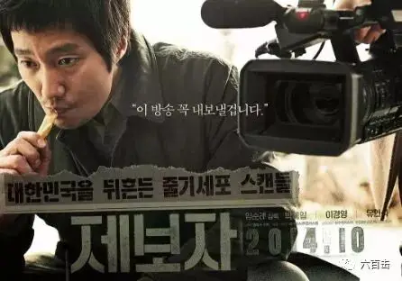
电影根据发生在韩国的一件真实学术造假事件改编，这件造假事件可以称得上21世纪科学界十大丑闻之一。
2005年，韩国著名科学家，“克隆之父”黄禹锡博士被揭发出论文造假，经过调查证明，黄禹锡有关于干细胞的论文和研究成果都是伪造。
此事当时在全球造成了极大的影响，给韩国科学界、韩国国民以及韩国的科学经济都造成了损失。
而曝光此事的正是韩国MBC电视台制的《PD手册》，这是一家私人电视台，当年火遍全国的《大长今》就是这个电视台制作的电视剧。
《PD手册》是该电视台下属新闻调查类节目，这是一个非常良心、勇敢的节目，此前不久，正是这个节目揭露了金基德性侵和潜规则女演员的丑闻。
电影中PD记者尹敏哲因调查一件意外死亡事件，无意中发现一家大型医疗企业在贩卖卵子。
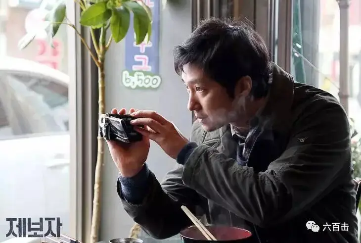
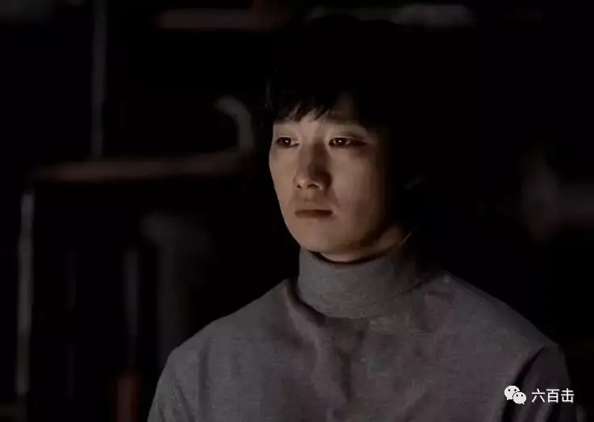
▲男主是不是很眼熟，曾出演《杀人回忆》
而这家医疗企业中入驻着红极全国的李长焕博士（黄禹锡）的科研团队。
李长焕宣称成功培育了11个人类胚胎干细胞，这项生物科学的新突破有望能够治疗很多绝症。
这个消息成为很多患病家庭的希望。
不仅如此，这项技术也使得韩国在生物技术上走在了世界的前列，甚至超越美国。
弱国心态下，这使得李长焕成为了民族英雄和国家的自豪。
李长焕成为了各行各业社会名流争相结交的对象，人民群众在他激情澎湃的演讲下热泪盈眶。
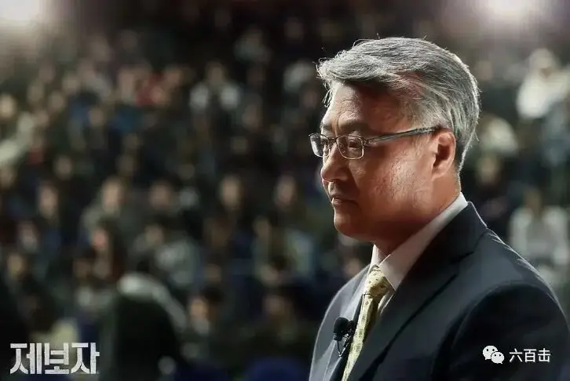
面对这样的权威，本应该就此作罢，但是出于职业习惯，尹敏哲托朋友打听到一个曾在李长焕实验室工作过的科研人员。
尹敏哲尝试着联系了这位科研人员，但是对方并有接到他的电话。
当晚，尹敏哲忽然接到了对方的回电，对方要求见面。
见面后，对方首先问了尹敏哲一个问题：“真相和国益哪个更重要？"
尹敏哲告诉对方，是真相。
这获得了对方的信任，这位科研人员叫沈敏浩，曾是李长焕博士研究团队中的一员。
他向敏哲举报，李长焕博士根本就没有培育出人类胚胎干细胞，李长焕是一个骗子。
这个举报震惊了敏哲，凭着职业经验，他知道如果敏浩说的是真相，那要揭露这件事将会非常困难。
因为戳穿这个谎言，要打很多人的脸，下到视李长焕博士为救命稻草的患者，上到整个国家的形象。
而红极一时的李长焕更是有很强的实力扑灭他们的行动。
所以敏哲首先向两位领导进行了汇报，大领导犹豫不决，敏哲将敏浩的问题抛给了这位领导：“真相和国益哪个更重要？"
面对良心的拷问，领导也站在了真相的一边，他告诉敏哲：真相就是国益。
获得领导支持后，敏哲立即组织人准备对敏浩开展采访。
可是，敏浩却拒绝了采访。
原来自从离开李长焕团队后，敏浩遭到了封杀，因为找不到工作，家庭过得很紧张，而女儿患有绝症更使敏浩承受着巨大的压力。
自己的妻子还在李长焕博士的团队中工作，李长焕很有手段，一边给敏浩施压，一边又给他妻子提供帮助。
敏浩不忍心每况愈下的家庭再因他的举报走向毁灭，再三犹豫之下敏浩拒绝了采访。
敏哲清楚敏浩的压力和不容易，他想尽办法为敏浩找到了工作，敏哲的帮助和坚持再一次给了敏浩举报的勇气和决心。
敏浩接受了敏哲的采访，敏浩告诉敏哲，李长焕对外公布的十一个干细胞实际只是十一个受精卵，因为形状非常像，甚至专家都很难分辨，所以李长焕才能瞒天过海。
采访的最后，敏哲问敏浩为什么要举报李长焕。
敏浩告诉敏哲，他因为自己患病的女儿才加入李长焕的团队，因为干细胞给了拯救自己女儿的希望。
但是，当敏浩发现真相后，他知道虚假的希望不是真正的希望，所以他选择举报。
有了采访，敏哲需要获取更多的证据。
他们发现李长焕团队中，宣传人员竟然比研究人员多。
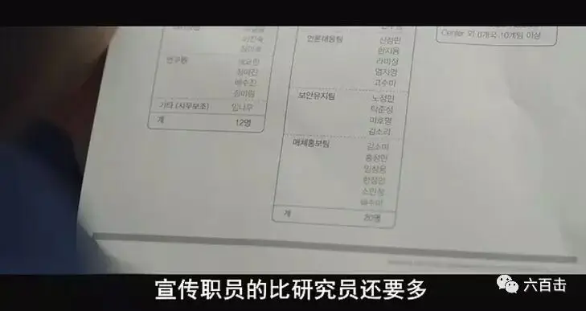
甚至李长焕的论文也涉嫌造假。
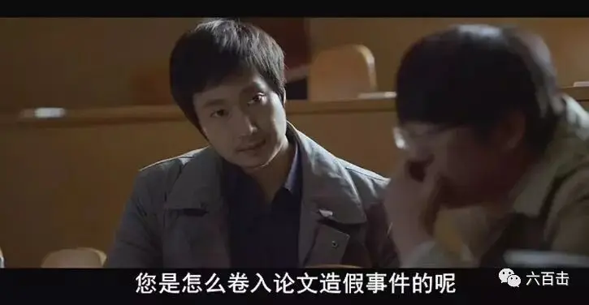
就是李长焕团队中的人，也因为没有亲眼见过干细胞而起疑心。
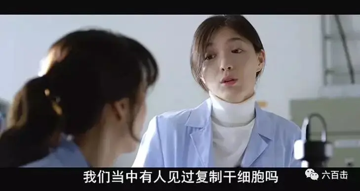
敏哲的调查遭到了李长焕的反击。
这位博士的手段非常高，演技也是奥斯卡级别的。
没有等敏哲爆料，他就向外界透露出消息，宣称因为自己的功绩遭到某些人的嫉妒和恶意中伤，最近有些心力交瘁。
民族英雄受到小人诋毁，那还了得，民众对敏哲进行了声势浩大的讨伐和谴责。
甚至在李长焕施压下，爆料他论文造假的学者被迫在电视中称敏哲对他进行了暴力采访，自己所说的话并非出于自愿。
缺乏真相的人民立即成为被操纵的乌合之众。
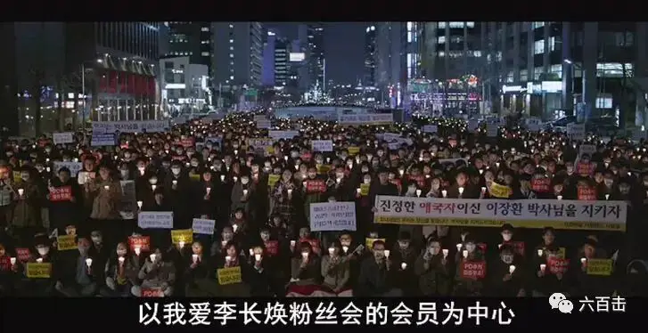
看着黑压压游行抗议的群众，敏哲感慨到：
我第一次觉得眼前的这些人如此可怕，我以为说了真话，人们就会站到我们这边，没想到会这样......
李长焕并没有给敏哲喘息的机会，他利用自己的人脉，发动各个新闻机构对敏哲及其所在的电视台发动攻击和谴责。
最终，敏哲的领导被降级调往别处，敏哲也面临随时到来的处分。
李长焕更是亲自导演了一出又一出苦情戏，甚至有残疾人士来声援李长焕，表示坚定地相信李博士，并用颤抖的手去艰难地抹去李博士委屈的眼泪。
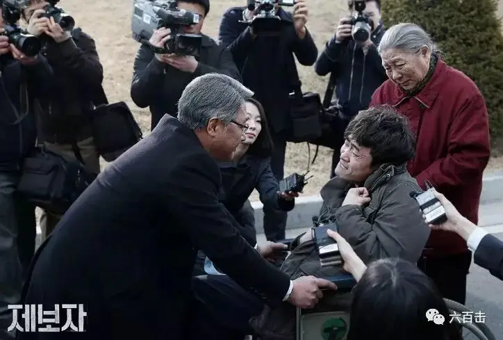
不断的新闻爆料和声援李长焕的报道，让一个为民创新搞科技却惨遭小人诟病诋毁的受害者形象深入人心。
人们游行抵制电视台播出采访视频，甚至抵制敏哲提出的干细胞验证程序。
这些都让敏哲陷入到绝望和无助中。
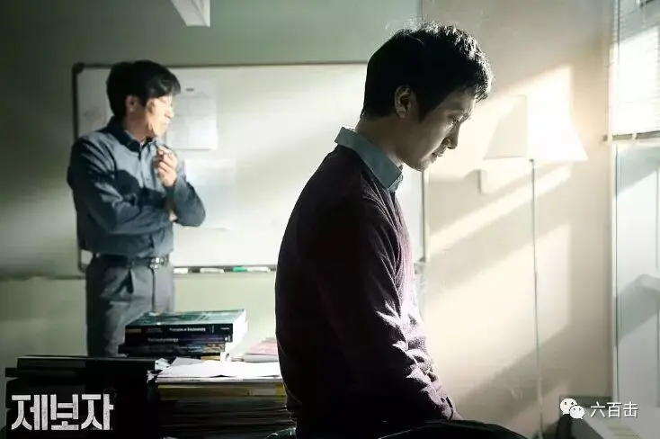
幸好，一位机智的同事，将李长焕的干细胞图像和受精卵图像做了一个“找不同”的图片，并发布在网上。
这在网上掀起了网名的讨论和转发，因为两张图片几乎是一样的，根本找不到不同的地方。
终于，群众中有要求播出节目的呼声出现了。
这时候，李长焕更是将苦情戏发挥到了极致，他来了一招自杀未遂来最大程度地博取人民的同情，来阻止节目的播出。
毕竟，不明真相的人只会觉得一个伟大的人民科学家就要被流言杀死了，这份激愤引起了对敏哲和其所在电视台更加声势浩大的讨伐。
最后的考验留给了电视台的社长，电视台能否顶住压力播出节目？
因为这件事涉及国家形象，青瓦台官员出面约见了社长。
官员告诉社长“最好不要播出，我们也有不少贵台的资料”。
这句话看似简单，分量却极重，社长不堪压力，取消了节目的播出计划。
最后，敏哲冒死拦住社长的车，向社长大声背诵电视台创办的初衷和工作宗旨：保持新闻独立、真相大于一切、应该将判断的权利留给群众......
每一句话都是对社长良心的拷问，社长最终还是选择了良心和真相。
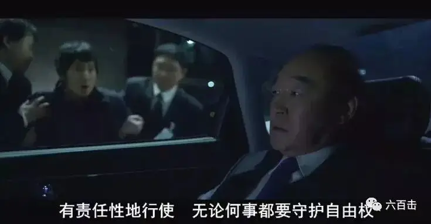
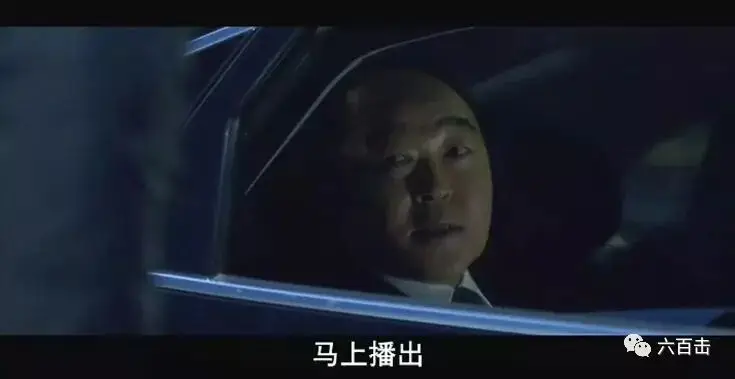
▲《熔炉》中的变态校长终于扮演了一次好人
节目播出后，真相震动了全国和整个世界。
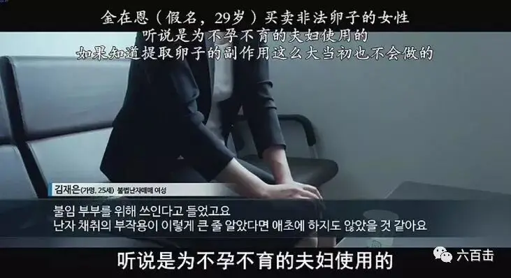
很可惜，这么好的题材，电影只是将故事拍成了简单的二元对立。
实际中李长焕并非从开始就是一个骗子，他也曾取得不俗的成就，地位相当于中国的袁隆平。
但是李长焕如何走向堕落和谎言更值得深思和探讨。
所以，电影的格局并不大，不过，韩国能够将自己的丑闻和耻辱拍出来已经令人非常钦佩。
而我们自己更不缺这样的故事，缺的只是真相。
当我们的谎言跟着房地产的泡沫越吹越大的时候。
整个民族就会失去脚踏实地和前进的能力。
当我们随着这些五彩缤纷的奇幻泡泡飘向空中的时候，我们需要扎破这些泡沫回到地面。
特朗普帮我们扎破了一个高科技芯片的泡泡。
更多的泡泡需要我们自己动手扎破，而这份能力不仅仅来自于社会制度，更来自于每个独立个体的良心自由。
因为良心，简光洲才敢于揭露三鹿奶粉：
虽然意识各种风险，但还是义无反顾地做出了“点出三鹿企业名字”的决定，否则我总感觉到良心上有些不安。
我不是说我有多高尚，我只是想说出一个事实。在这个社会，面对着各种诱惑与风险，要说出一个简单的事实其实也不并不容易。
而像简光洲这样的人太少，大多数人的良心已经被满口仁义道德吞吃的只剩下虚伪和自欺，我们没有良心自由，也不知道自己没有良心自由。
孕育现代文明的西方有忏悔录，敢于直面自己的罪恶和虚伪，我们却只有厚黑和假仁义。
所以别人的文字里总是充满了黑暗，但现实却充满了光明，而我们的文字到处是光明，但现实却充满了黑暗。
所以见到性感的女郎，列夫托尔斯泰可以承认自己即使年老，见到女人仍然会动邪念，而我们却心里想着、眼睛漂着，嘴上却不承认，还会讲着道德。
所以当遇到不公时，一个良心自由的人，会为了原则去斗争，而我们怀着一种“今天你对我爱答不理，明天让你高攀不起”的厚黑信念，去保持微笑和沉默。
等我们身居其位时，我们比那些我们曾经看不贯的人更疯狂、更龌龊。
这也是为什么我们需要信仰的原因，因为信仰是保持良心自由的根基，良心和道德感是上帝放在我们心中的赏赐。
当我们靠近创造良心的源头时，我们才会对自己有更加清楚的认识，才会更能看清楚自己内心的诡诈。
也才会有更加敏感的良心自由，这份自由才可能不会轻易地被利益、恐惧、骄傲、虚伪所侵吞。
当我们远离这个源头时，我们总是觉得自己很干净，殊不知，不是我们干净，而是我们离光太远了，根本看不清自己的黑暗。
而作为群体中的个体如果没有了良心自由，虚妄的泡沫会持续上升，当它升至高空不得不破灭的时候，我们会摔得粉身碎骨。
关注并回复：举报者
获取电影资源
相关推荐：
这是一部绝不可辜负的经典
十个破土而出的希望
击垮纳粹独裁的六份传单
《乡愁》 | 没有一个人能够将信仰拍的如此诗意和凝重
100双绝望的眼睛
奥斯卡影帝，你把自己演死了
六百击 | 为了梦想，也为了尿不湿
这里没有挑逗你眼目情欲的小鲜肉
也没有挑动你肉体情欲的段子
更没有膨胀你今生骄傲的鸡血
我们只在乎那些最质朴真诚的作品
在那里我们才能恢复真正的想象力
我们也坚信这才是我们真正需要的

ID:Six_hundred_hits
长按二维码，一键关注
【六百击】
-END-
电影评论
尽情分享朋友圈
苹果打赏
通道
小提示：文末广告是腾讯配送广告，内容与本号无关，但您的每次点击（无需反复点）都会给平台带来几毛收益，欢迎您点击支持六百击。